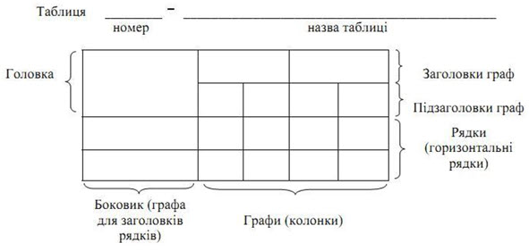
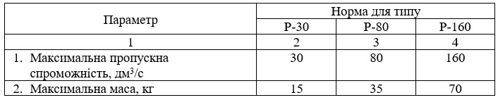
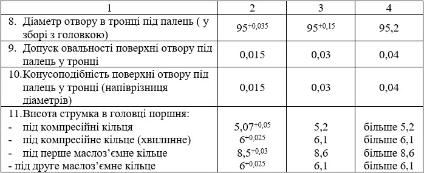
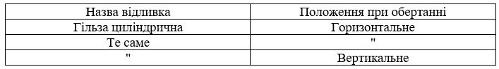

2.2 Оформлення таблиць
Цифровий матеріал, як правило, оформлюють у вигляді таблиць (рисунок 2.5).

Рисунок
2.5 – Загальний вигляд таблиці
Таблицю
слід розташовувати безпосередньо після тексту, в якому вона згадується вперше,
або на наступній сторінці. Таблиця може мати назву, яку виконують шрифтом
аналогічним тексту документу з великої літери і вміщують над таблицею з
абзацного відступу. У випадку розташування назви на декількох строках, починати
наступну строку допускається з абзацного відступу. Назва має бути стислою і
відбивати зміст таблиці.
Таблицю
слід нумерувати арабськими цифрами з порядковою нумерацією в межах розділу, або
наскрізну в межах документу, за винятком таблиць, що наводяться в додатках.
Номер таблиці складається з номеру розділу і порядкового номеру таблиці,
відокремлених крапкою, наприклад, «Таблиця 2.1» - перша таблиця другого розділу.
На
всі таблиці повинно бути посилання в тексті, при цьому слово таблиця в тексті
пишуть повністю.
Якщо
рядки або графи таблиці виходять за межі формату сторінки, таблицю поділяють на
частини, розміщуючи одну частину під іншою, або поруч, або переносять частину
таблиці на наступну сторінку, повторюючи в кожної частині таблиці її головку і
боковик. В першій частині таблиці, нижню горизонтальну лінію, що обмежує
таблицю, не проводять. При поділі таблиці на частини допускається її головку або
боковик заміняти відповідно номерами граф чи рядків, нумеруючи їх арабськими
цифрами у першій частині таблиці. Слово «Таблиця___» вказують один раз зліва з
абзацу над першою частиною таблиці, над іншими частинами таблиці пишуть:
«Продовження таблиці ___» з позначенням номеру таблиці. Відстань від тексту до
назви таблиці і від назви таблиці до таблиці, а також від таблиці до подальшого
тексту повинна бути рівною одному рядку.
Заголовки
граф таблиці починають з великої літери, а підзаголовки - з малої, якщо вони
складають одне речення з заголовком. Виконуються шрифтом Times New Roman, розмір
шрифта 14 пт, нарис звичайний з вирівнюванням по центру відповідної
графи.
Підзаголовки,
що мають самостійне значення, пишуть з великої літери. В кінці заголовків і
підзаголовків таблиць крапки не ставлять, заголовки і підзаголовки указують в
однині.
Графи
таблиць нумерують лише в тому разі, коли на них посилаються в тексті. Графу «№
з/п» в таблиці не виконують. Якщо потрібно нумерувати показники, параметри чи
інші дані, то їх порядкові номери можна поставити в боковику таблиці.
Якщо
повторюваний в графі текст складається з одного слова, то його заміняють
лапками, якщо з двох чи більше слів, то першому повторенні його заміняють
словами «Те саме», а далі лапками (рисунок 3.6).
Ставити
лапки замість повторюваних цифр, знаків, математичних та хімічних символів не
допускається.
Якщо
всі параметри, що вміщені в таблиці мають однакові одиниці вимірювання (м, мм
тощо), то позначення цієї одиниці розміщують над таблицею . Якщо у параметрів
різні одиниці вимірювання, то їхні позначення вказують у заголовку кожної графи.
Якщо
всі параметри в одному рядку мають одну одиницю вимірювання, то її вказують у
відповідному рядку боковика.
Таблиці,
за необхідності, можуть бути перелічені у змісті із зазначенням їх номерів, назв
(якщо вони є) та номерів сторінок, на яких вони розміщені.
Таблиці
розміщують симетрично тексту в межах текстового поля. Допускається розміщувати
таблицю з поворотом на 90°, розміщуючи її симетрично текстовому
полю.
Таблиця 2.1

Продовження таблиці 3.1

Таблиця 3.3

Рисунок 2.6 – Приклади оформлення таблиць пояснювальної записки